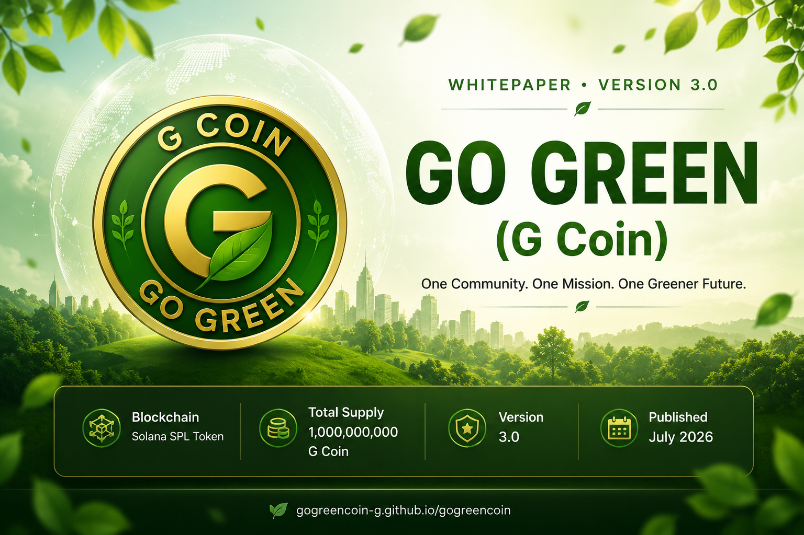

WHITEPAPER • VERSION 3.0One Community. One Mission. One Greener Future.
Solana SPL Token
1,000,000,000 G Coin
3.0
July 2026
Go Green (G Coin) is more than a meme coin. It is a community-driven environmental movement built on the Solana blockchain to inspire climate awareness, sustainability, and real-world green action.
Traditional meme coins often rely solely on hype and speculation. Go Green (G Coin) introduces a different vision by combining blockchain innovation with a global environmental mission.
Our objective is to unite individuals, creators, developers, investors, and environmental supporters into one transparent ecosystem that encourages long-term community participation while promoting sustainability.
Through future community initiatives, educational campaigns, and environmental programs, Go Green aims to demonstrate how decentralized technology can help create measurable positive impact beyond digital assets.
One Community. One Mission. One Greener Future.
To become the world's most trusted community-driven green blockchain project, inspiring millions of people to support sustainability while embracing decentralized technology.
Addressing environmental challenges through community, transparency, and blockchain innovation.
Climate change, deforestation, pollution, and carbon emissions continue to threaten ecosystems and future generations. Although awareness is increasing, many environmental initiatives still struggle with limited transparency, fragmented communities, and insufficient long-term engagement.
At the same time, many blockchain projects focus mainly on short-term speculation instead of creating meaningful, transparent, and sustainable community value.
Go Green (G Coin) combines the speed and transparency of the Solana blockchain with a global community that promotes sustainability, education, and long-term environmental awareness.
Building a transparent, community-driven ecosystem that connects blockchain technology with sustainability.
Go Green (G Coin) is designed as a community-first ecosystem powered by the Solana blockchain. The project brings together supporters, developers, creators, environmental advocates, and long-term holders under one shared mission of building a greener future.
The ecosystem will continue to evolve through community engagement, educational initiatives, strategic partnerships, and sustainability-focused programs.
Go Green (G Coin) believes a strong community is the foundation of every successful decentralized project. Every supporter contributes to building a transparent, sustainable, and globally recognized ecosystem.
A transparent and sustainable token distribution model designed to support long-term ecosystem growth.
Total Supply
Public Ecosystem
Ecosystem Reserve
Decimals
| Item | Details |
|---|---|
| Token Name | Go Green |
| Symbol | G Coin |
| Blockchain | Solana |
| Standard | SPL Token |
| Total Supply | 1,000,000,000 |